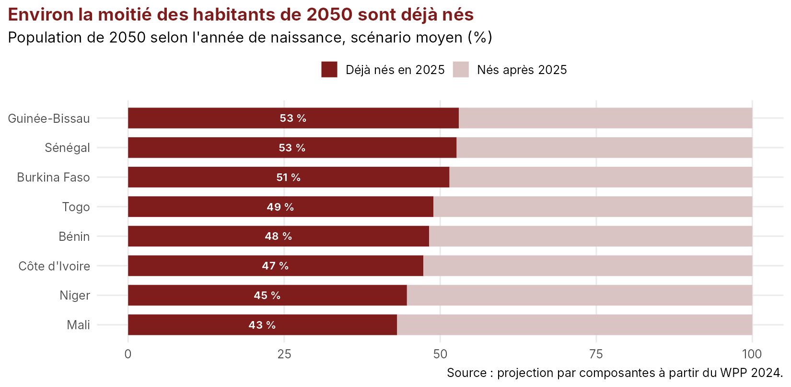
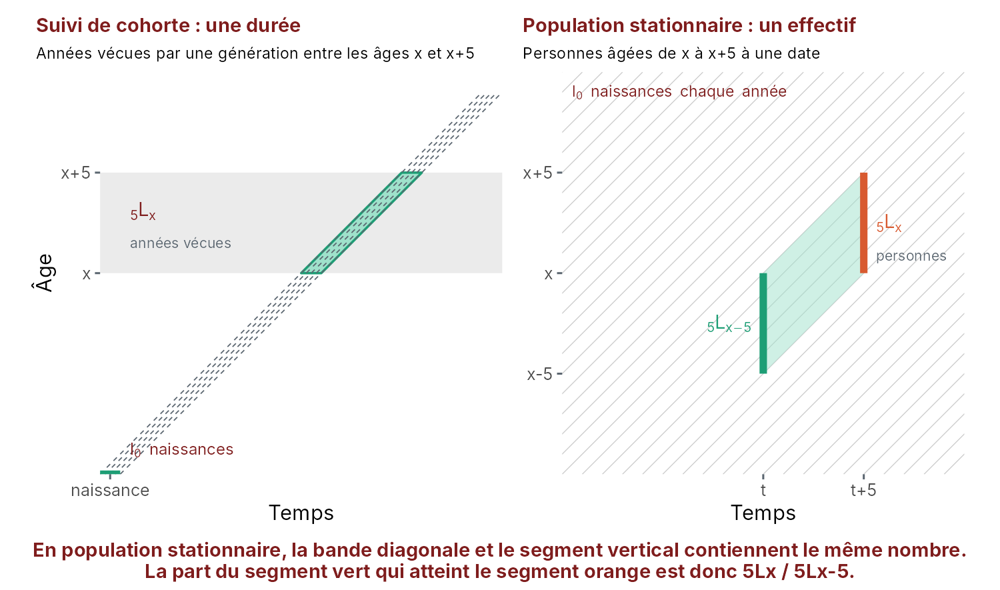
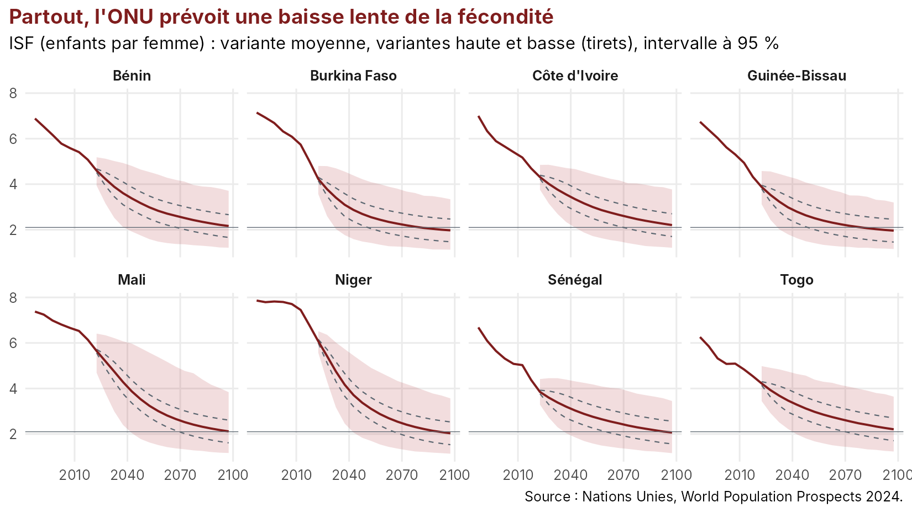
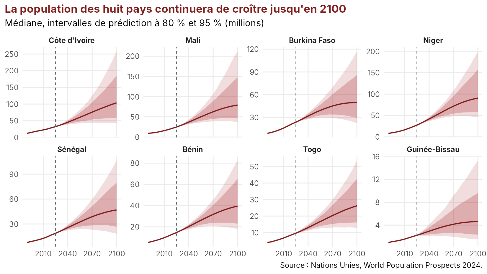
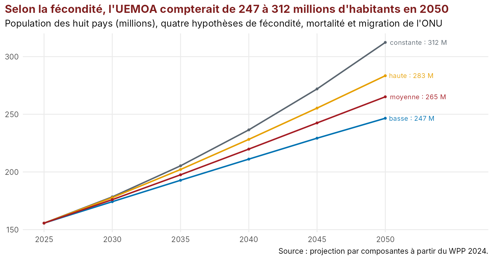
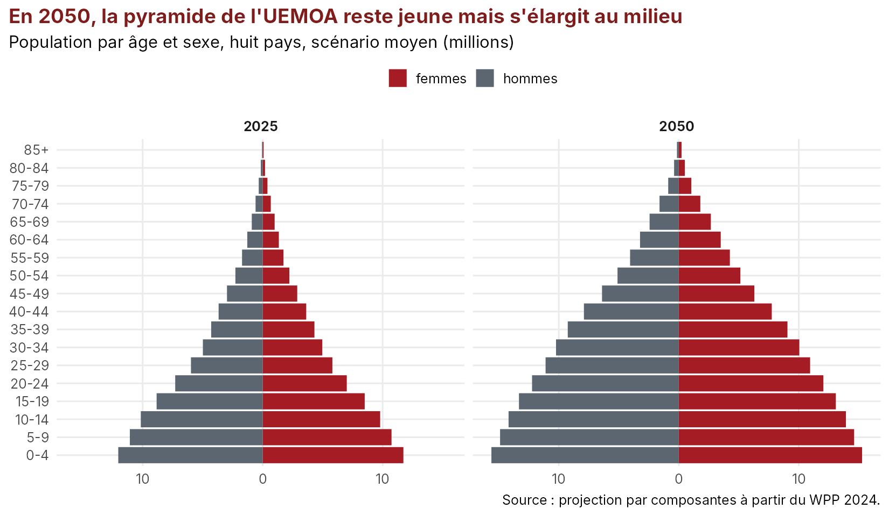

flowchart LR A["Population en t<br/>sexe × âge"] --> B["1. Survie<br/>× ₅Lₓ / ₅Lₓ₋₅"] M["Migration nette<br/>moitié début, moitié fin"] --> B B --> C["2. Groupe ouvert<br/>95-99 et 100+ → 100+"] C --> D["Population en t+5"] A -->|"femmes 15-49"| E["3. Naissances<br/>f(x) × femmes moyennes"] E --> F["4. Filles et garçons<br/>selon le RMN"] F --> G["5. Survie jusqu'à 0-4 ans"] G --> D D -.->|"période suivante"| A
Projeter la population pour planifier
Jour 4 · Prospective et scénarios — Formation régionale UEMOA
Vissého Adjiwanou, PhD
Département de sociologie, UQAM · SSAPOPLAB
26 novembre 2026
Déroulé de la journée
| Horaire | Bloc | Contenu |
|---|---|---|
| 8 h 30 – 9 h | Retour sur l’exercice de mercredi | Deux équipes présentent |
| 9 h – 12 h 30 | Cours (pause 10 h 30 – 11 h) | Méthodes, hypothèses, incertitude, besoins |
| 14 h – 15 h 30 | Labo (démonstration) | Projeter un pays à 2050 en R, et en Excel |
| 15 h 45 – 17 h 45 | Travail en équipe pays | Scénario à 2050 et besoins d’un secteur |
Objectifs de la journée
À la fin de la journée, vous serez capables de :
- expliquer la méthode des composantes et ce que chaque hypothèse y apporte ;
- projeter la population de votre pays à 2050 sous plusieurs hypothèses de fécondité, en R ou en Excel ;
- lire une projection probabiliste et dire ce qu’elle permet d’affirmer ;
- traduire une projection en besoins pour un secteur (écoles, emplois, santé) et l’écrire en une phrase pour un décideur.
Plan du cours
| Partie | Durée | |
|---|---|---|
| 1 | Pourquoi projeter ? | 20 min |
| 2 | Des formules globales à la méthode des composantes | 25 min |
| 3 | La méthode des composantes, pas à pas | 45 min |
| Pause | 30 min | |
| 4 | Construire les hypothèses | 35 min |
| 5 | L’incertitude : des variantes aux projections probabilistes | 25 min |
| 6 | Des projections aux besoins, et au-delà | 30 min |
Sondage d’ouverture
Levez la main :
- Votre INS a-t-il publié une projection de population depuis le dernier recensement ?
- Avez-vous déjà participé à une projection ? Avec quel outil : Excel, Spectrum, R, autre ?
- Avez-vous déjà utilisé R au-delà des labos de cette semaine ?
1 · Pourquoi projeter ?
« Gouverner, c’est prévoir »
« Savoir pour prévoir, prévoir pour agir. » — Jacques Vallin (2002)
« Les perspectives démographiques servent à nous faire connaître par le calcul quel serait l’avenir d’une population, en nombre et en structure, dans telle ou telle hypothèse. » — Louis Henry (1973)
- Anticiper les conséquences de tendances déjà engagées.
- Éviter qu’un futur porteur de déséquilibres ne se réalise : c’est le paradoxe de la projection réussie, qui ne se réalise pas parce qu’on a agi.
Trois mots à ne pas confondre
| Terme | Ce que c’est | Question posée |
|---|---|---|
| Projection | Calcul conditionnel : résultat mécanique d’hypothèses données | « Que se passerait-il si… ? » |
| Perspective | Projection jugée la plus plausible par son auteur | « Que pensons-nous probable ? » |
| Prévision | Projection assortie d’une mesure explicite d’incertitude | « Avec quelle probabilité ? » |
Une projection ne se trompe jamais : elle est juste, si le calcul l’est, au regard de ses hypothèses. Ce sont les hypothèses qui peuvent se tromper.
À quoi servent les projections dans un INS ?
Planification
- Plans nationaux de développement
- Cartes scolaires, besoins en enseignants
- Couverture vaccinale, soins maternels
- Emplois à créer, retraites
Statistique publique
- Dénominateurs des indicateurs (ODD, taux de scolarisation, couverture sanitaire)
- Bases de sondage des enquêtes entre deux recensements
- Allocation de budgets aux régions
À la salle : quels ministères vous demandent des projections ? À quel niveau géographique ?
2 · Des formules globales à la méthode des composantes
Malthus (1798) : la première projection célèbre
« La population croît à un rythme géométrique alors que les subsistances évoluent de manière linéaire. »
- Population : 1, 2, 4, 8, 16, 32…
- Subsistances : 1, 2, 3, 4, 5, 6…
- D’où les « freins » : préventifs (mariage tardif) ou destructifs (famines, épidémies).
- Marx répond que la « surpopulation » est relative à un mode de production.
- Boserup inverse la causalité : la pression démographique stimule l’innovation agricole.
Les méthodes mathématiques globales
| Modèle | Formule | Hypothèse implicite |
|---|---|---|
| Linéaire | \(P(t) = P(0) + b\,t\) | Même accroissement absolu chaque année |
| Géométrique | \(P(t) = P(0)\,(1+r)^t\) | Taux de croissance constant, discret |
| Exponentielle | \(P(t) = P(0)\,e^{rt}\) | Taux de croissance constant, continu |
| Logistique | \(P(t) = \dfrac{K}{1 + e^{-r(t - t_0)}}\) | Croissance freinée vers un plafond \(K\) |
Avec \(r = \ln\!\big(P(t_2)/P(t_1)\big) / (t_2 - t_1)\) entre deux recensements.
Limites : aucune structure par âge, donc pas d’élèves, pas d’actifs, pas de naissances ; un taux constant ignore la transition.
Pourquoi raisonner par âge : l’inertie démographique

La méthode des composantes
- Utilise les trois phénomènes de la dynamique : fécondité, mortalité, migration.
- Appliquée pour la première fois par Wicksell (1926) et Whelpton (1928).
- Base de toutes les projections modernes : ONU, Wittgenstein Centre, IHME, INS.
L’équation de bilan, appliquée à chaque groupe d’âge et de sexe :
\[ P_{t+5} = P_t + \underbrace{N_{t,t+5}}_{\text{naissances}} - \underbrace{D_{t,t+5}}_{\text{décès}} + \underbrace{I_{t,t+5} - E_{t,t+5}}_{\text{migration nette}} \]
3 · La méthode des composantes, pas à pas
Les intrants
| Intrant | Ventilation | Source (dans le labo) |
|---|---|---|
| Population de départ, 1er juillet 2025 | sexe × âge quinquennal, 0-4 à 100+ | WPP 2024 ou recensement corrigé |
| Rapports de survie \(_5L_x / {}_5L_{x-5}\) | sexe × âge × période | tables de mortalité projetées |
| Taux de fécondité par âge \(f_x\) | 15-19 à 45-49 × période | ISF × calendrier |
| Rapport de masculinité à la naissance | période | 1,03 à 1,05 dans l’UEMOA |
| Migrants nets \(M_x\) | sexe × âge × période | hypothèse de l’ONU |
L’algorithme en un schéma
On répète les étapes à chaque période de 5 ans : 2025 → 2030 → … → 2050.
Deux lectures de \(_5L_x\) sur le diagramme de Lexis

Étape 1 : faire vieillir les cohortes
\[ {}_5N_x(t+5) = {}_5N_{x-5}(t) \cdot \frac{{}_5L_x}{{}_5L_{x-5}} \]
- Formule de Preston, Heuveline et Guillot (2001, chap. 6). Le rapport vient de la table de mortalité de la période ; dans le code du labo, il s’appelle
S. - Exemple : 515 562 filles de 15-19 ans au Togo en 2025, \(_5L_{20} / {}_5L_{15} = 0{,}985\) → environ 508 000 femmes de 20-24 ans en 2030, avant migration.
- Groupe ouvert : même principe, avec le rapport \(T_{100} / T_{95}\) appliqué aux 95-99 ans et aux 100 ans et plus.
Étapes 2 à 4 : les naissances
On applique les taux de fécondité à l’effectif féminin moyen de la période :
\[ B(t, t+5) = 5 \sum_{x=15}^{45} f_x \cdot \frac{W_x(t) + W_x(t+5)}{2} \]
On répartit par sexe, \(B_F = B / (1 + \text{RMN})\) et \(B_M = B - B_F\), puis on fait survivre les naissances jusqu’au groupe 0-4 ans :
\[ P_{0\text{-}4}(t+5) = B_s \cdot \frac{{}_5L_0}{5\, l_0} \]
Étape 5 : la migration
Hypothèse classique : la moitié des migrants arrive en début de période et subit la mortalité, l’autre moitié en fin de période.
\[ {}_5N_x(t+5) = \Big[{}_5N_{x-5}(t) + \tfrac{1}{2} M_x\Big] \frac{{}_5L_x}{{}_5L_{x-5}} + \tfrac{1}{2} M_x \]
- Dans l’UEMOA, les soldes sont négatifs pour sept pays sur huit : de –13 000 (Guinée-Bissau) à –278 000 (Mali) sur 2025-2030.
- La Côte d’Ivoire est le seul pays à solde positif (+34 000).
- Ces soldes sont les plus incertains de toutes les hypothèses.
Exemple chiffré à faire en binôme
| Groupe | Femmes en 2025 | \(f_x\) annuel | Survie au groupe suivant |
|---|---|---|---|
| 15-19 | 120 000 | 0,10 | 0,995 |
| 20-24 | 100 000 | 0,20 | 0,993 |
| 25-29 | — | 0,18 | — |
Calculez (5 minutes) :
- les femmes de 20-24 ans et de 25-29 ans en 2030 ;
- les naissances de la période dues à ces deux groupes ;
- les filles de 0-4 ans en 2030, avec un RMN de 1,05 et \(_5L_0 / (5\,l_0) = 0{,}93\).
Une projection ne vaut pas mieux que sa population de départ
- Sous-dénombrement des jeunes enfants et des jeunes hommes mobiles.
- Attraction des âges ronds : à mesurer par les indices de Whipple et de Myers, ou l’indice combiné des Nations Unies.
- Date de référence : ramener le recensement au 1er juillet de l’année de départ.
Deux choix possibles dans le labo :
- la population de départ de l’ONU, déjà corrigée ;
- votre recensement par âge simple, regroupé en âges quinquennaux et lissé, si vous l’avez apporté.
Pause · reprise à 11 h
4 · Construire les hypothèses
Le choix des hypothèses
À chaque période, il faut choisir une table de mortalité, des taux de fécondité et des soldes migratoires.
- Constance : fécondité et mortalité constantes. C’est un scénario de référence, pas une hypothèse plausible : il mène, à terme, au modèle de population stable.
- Extrapolation des tendances : prolonger les séries passées les plus longues possibles. Limite : les retournements et les paliers.
- Analogie avec la transition : s’inspirer d’un pays plus avancé dans la transition. Limite : quelle référence pour les pays qui ont fini leur transition ?
- Modèles statistiques : trajectoires probabilistes de l’ONU (partie 5).
Fécondité : le niveau
L’ONU distinguait trois groupes de pays : fécondité élevée, moyenne et faible. Aujourd’hui, chaque pays suit une trajectoire de baisse tirée d’un modèle commun à tous les pays.
Une forme simple et réaliste pour un scénario national, la logistique :
\[ \text{ISF}(t) = L + \frac{U - L}{1 + e^{\,k\,(t - t_0)}} \]
\(U\) = niveau de départ, \(L\) = niveau final, \(t_0\) = date de baisse la plus rapide, \(k\) = vitesse.
Variantes de l’ONU : haute et basse = variante moyenne ± 0,5 enfant (atteint progressivement).
Fécondité : les hypothèses de l’ONU pour l’UEMOA

Fécondité : le calendrier
Les taux par âge se déduisent de l’ISF et d’une structure par âge \(p_x\) (somme égale à 1) :
\[ f_x = \frac{\text{ISF} \times p_x}{5} \]
- Âge moyen à la maternité : \(\bar m = \sum_x (x + 2{,}5)\,f_x \big/ \sum_x f_x\).
- Dans le labo, on garde le calendrier projeté par l’ONU et on ne fait varier que le niveau.
- Piège : un recul de l’âge à la maternité fait baisser l’ISF du moment sans changer la descendance finale (effet de calendrier).
Mortalité
On projette l’espérance de vie à la naissance \(e_0\), puis on en déduit une table complète.
- Gains rapides aux niveaux moyens, plus lents au-delà de 75 ans.
- L’ONU prévoit +4 à +5,5 ans dans l’UEMOA entre 2020-2025 et 2045-2050.
- De \(e_0\) à une table : tables types, logit de Brass, Lee-Carter.
\[ Y_x = \tfrac{1}{2}\ln\!\left(\frac{1 - l_x}{l_x}\right) = \alpha + \beta\, Y_x^{\text{standard}} \]
Migration
- On projette des soldes nets par âge et sexe, faute de flux d’entrées et de sorties mesurés.
- Profil par âge très régulier (modèle de Rogers-Castro) : un pic chez les jeunes adultes, les enfants qui suivent leurs parents.
- Hypothèses usuelles : solde constant, retour progressif vers zéro, scénarios (migration nulle ou doublée).
- Dans l’UEMOA, l’essentiel des migrations est intrarégional : ce que perd l’un, un voisin le gagne en partie.
Combiner les hypothèses : priorité à la fécondité
| Scénario | Fécondité | Mortalité | Migration |
|---|---|---|---|
| Constante | ISF de 2020-2025 maintenu | ONU, moyenne | ONU, moyenne |
| Haute | ONU, variante haute (+0,5) | ONU, moyenne | ONU, moyenne |
| Moyenne | ONU, variante moyenne | ONU, moyenne | ONU, moyenne |
| Basse | ONU, variante basse (–0,5) | ONU, moyenne | ONU, moyenne |
Ce sont les quatre scénarios du labo. À 2050, c’est la fécondité qui crée l’essentiel des écarts.
5 · L’incertitude : des variantes aux projections probabilistes
Les projections de l’ONU sont-elles fiables ?
- On peut confronter les projections passées à ce qui s’est réalisé.
- La projection de la population mondiale de l’an 2000, faite en 1958, s’est révélée remarquablement juste.
- Mais les erreurs croissent avec l’horizon, et elles sont plus fortes pour les pays dont les données de base sont fragiles.
- Les révisions successives changent les résultats : la population mondiale attendue en 2100 a été revue à la baisse d’environ 700 millions en dix ans.
Des variantes aux probabilités
Les variantes ±0,5 enfant supposent un écart identique partout et toujours, ne disent rien de leur probabilité, et ignorent la mortalité et la migration.
Depuis le début des années 2010, l’ONU produit des projections probabilistes :
- un modèle bayésien de l’ISF et de \(e_0\) pour chaque pays, dont les paramètres sont tirés d’une distribution commune à tous les pays ;
- des milliers de trajectoires, chacune passée dans la méthode des composantes ;
- depuis le WPP 2024, l’incertitude sur la migration est aussi intégrée.
Lire une projection probabiliste

Trois règles pour utiliser ces résultats
- Une médiane n’est pas une certitude : donnez toujours l’intervalle.
- Les quantiles ne s’additionnent pas. Pour une région, un groupe d’âge ou un ratio, on calcule l’indicateur sur chaque trajectoire, puis on prend les quantiles.
- Variante moyenne ≠ médiane probabiliste. La première est une projection déterministe, la seconde le milieu de milliers de trajectoires : elles diffèrent légèrement.
Dans le labo, vous disposerez des deux : la variante moyenne et les intervalles de l’ONU, et des simulations bayesPop déjà calculées pour les huit pays.
Trois producteurs, trois logiques
| ONU (WPP 2024) | Wittgenstein (2023) | IHME (GBD 2021) | |
|---|---|---|---|
| Logique | Extrapolation statistique | L’éducation comme moteur | Régression sur des déterminants |
| Incertitude | Intervalles probabilistes | Scénarios SSP | Tirages et scénarios |
| Pic mondial | 10,3 milliards en 2084 | Selon le SSP | 9,7 milliards en 2064 (Vollset et al., 2020) |
| ISF mondial en 2100 | Environ 1,8 | Selon le SSP | 1,66 |
L’écart le plus fort concerne l’Afrique subsaharienne : la vitesse de baisse de la fécondité y dépend du modèle choisi plus que des données. Ezeh et al. (2020) soutiennent même que l’Afrique subsaharienne pourrait dépasser les projections, si la baisse de la fécondité y reste lente.
6 · Des projections aux besoins, et au-delà
Le scénario change le chiffre, pas la tendance

Des projections dérivées : un même principe
\[ \text{Besoin}(x, t) = \text{taux}(x, t) \times P(x, t) \]
| Secteur | Taux appliqué | Population | Résultat |
|---|---|---|---|
| Éducation | taux de scolarisation | 6-11 ans | élèves, enseignants, salles |
| Emploi | taux d’activité | 15-64 ans | actifs, emplois à créer par an |
| Santé | taux de recours | naissances, femmes 15-49 ans | accouchements, vaccinations |
| Logement | taux de chef de ménage | 15 ans et plus | ménages, logements |
Exemple : les élèves du primaire

Le dividende démographique

- La fenêtre s’ouvre quand le rapport de dépendance baisse : plus d’actifs potentiels par personne à charge.
- Elle ne produit un dividende que si ces actifs trouvent un emploi : c’est une opportunité, pas un acquis.
La pyramide de l’UEMOA en 2050

Population, ressources et climat
- IPAT (Ehrlich et Holdren, 1971) : \(I = P \times A \times T\). L’impact dépend de la population, mais aussi de la consommation et des techniques.
- Par habitant, les pays à forte croissance démographique émettent peu : c’est le paradoxe de la justice climatique (Muttarak, 2024).
- Les scénarios SSP du GIEC reposent sur des projections démographiques par niveau d’instruction : la démographie est un intrant des politiques climatiques.
- Inversement, le climat agit sur la mortalité, la fécondité et la migration : les hypothèses de demain devront l’intégrer.
De la projection agrégée à la microsimulation
| Projection par composantes | Microsimulation | |
|---|---|---|
| Unité | Groupes d’âge et de sexe | Individus |
| Hétérogénéité | Moyennes par groupe | Caractéristiques individuelles (éducation, région, union) |
| Question | Combien ? | Pour qui ? Quelles inégalités ? |
| Données | Agrégats | Population synthétique, histoires de vie |
La microsimulation part d’une population synthétique (celle construite mercredi) et applique à chaque individu des risques d’événements. Elle permet de comparer l’évolution de deux groupes sous un même scénario.
Ce qu’il faut retenir
- Une projection est un calcul conditionnel : discutez les hypothèses, pas le calcul.
- La méthode des composantes fait vieillir des cohortes déjà nées : à 2050, environ la moitié de la population est déjà là.
- À cet horizon, la fécondité fait l’essentiel de l’écart entre scénarios.
- Donnez toujours un intervalle, et n’additionnez jamais des quantiles.
- Une projection ne sert la décision que traduite en besoins : élèves, enseignants, emplois, services.
Vérification des acquis
- Pourquoi les variantes haute et basse de l’ONU ne sont-elles pas des intervalles de confiance ?
- Dans un pas de projection, pourquoi utilise-t-on l’effectif moyen des femmes de la période pour calculer les naissances ?
- Votre ministre demande combien d’enseignants recruter d’ici 2035. Quelles hypothèses de la projection pèsent le plus sur votre réponse ?
Cet après-midi
- 14 h – 15 h 30 · Labo : projection de votre pays à 2050 en R (le script
tp1_projection.R), puis la même chose dans le classeur Excel. - 15 h 45 – 17 h 45 · Équipe pays : choisir un scénario et un secteur, chiffrer l’écart de besoins entre deux scénarios, écrire la section « Scénario à 2050 » de la note pays.
Matériel : projet-projection/ (données des huit pays, scripts, simulations, classeur Excel). Aucune connexion internet n’est nécessaire.
Références
- Henry, L. (1973). Perspectives démographiques. INED.
- Preston, S. H., Heuveline, P. et Guillot, M. (2001). Demography: Measuring and Modeling Population Processes. Blackwell.
- Raftery, A. E. et al. (2012). Bayesian probabilistic population projections for all countries. PNAS, 109(35).
- Nations Unies (2024). World Population Prospects 2024: Summary of Results.
- K.C., S. et al. (2024). Updating the Shared Socioeconomic Pathways (SSPs) global population and human capital projections. IIASA, WP-24-003.
- Vollset, S. E. et al. (2020). Fertility, mortality, migration, and population scenarios for 195 countries and territories from 2017 to 2100. The Lancet, 396(10258), 1285-1306.
- Trovato, F. (2015). Canada’s Population in a Global Context, 2e éd., chap. 11. Oxford University Press.
- Muttarak, R. (2024). Towards a better understanding of the role of population policies in tackling climate change. Vienna Yearbook of Population Research, 22, 45-51.
- Ezeh, A., Kissling, F. et Singer, P. (2020). Why sub-Saharan Africa might exceed its projected population size by 2100. The Lancet, 396(10258), 1131-1133.
- Ehrlich, P. R. et Holdren, J. P. (1971). Impact of population growth. Science, 171(3977), 1212-1217.
Formation UEMOA · Jour 4 · Département de sociologie, UQAM · SSAPOPLAB